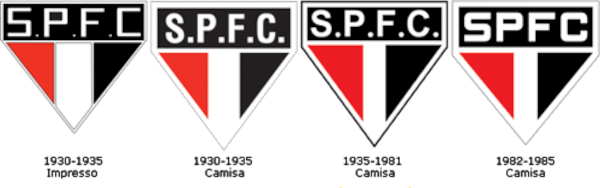
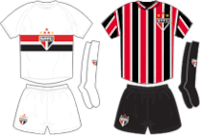
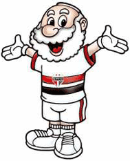
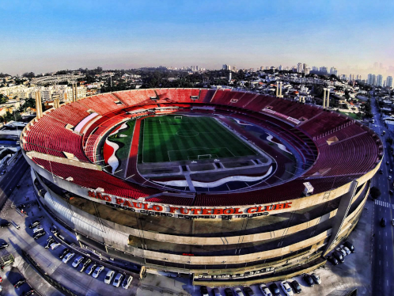

O nascimento
Fundado em 25/01/1930, mesma data do aniversário da cidade de São Paulo, o clube nasceu da união entre o Club Athletico Paulistano e a Associação Atlética das Palmeiras, que não possui relação com o rival alviverde. Dessa união, herdou do Club Paulistano suas cores vermelho e branco, e o status de clube de elite, já da Associação Atlética herdou a cor preta e o Estádio da Floresta, o que resultou no primeiro apelido do time que seria "Tigres da floresta".
Por conta de crises políticas e financeiras, o clube chegou a paralisar suas atividades em 1934, porém um grupo de torcedores e sócios se recusaram a ver o time nessa situação e promoveram seu renascimento. Desde então, o clube passou a ser conhecido como "O clube da fé", reforçando que, apesar das dificuldades, o São Paulo não se entrega e sempre ressurge mais forte.
A identidade que se tornou tradição
Desde a fundação, o clube mantém um padrão estético exigido pelo estatuto da instituição, o qual garante que mudanças radicais, tanto no símbolo, como nos uniformes principais, não são permitidas.
Escudo
Poucos dias após sua fundação, o escudo foi desenhado em um concurso interno pelo estilista alemão Walter Ostrich, que fez um design com formato inédito para a época, o Coração de 5 pontas tricolor, formado por um retângulo na parte superior junto a um triângulo na parte inferior. Nesse retângulo estão presentes as iniciais S, P, F e C, que fazem menção ao nome do clube e até 1984 sendo separadas por um ".", que hoje não é utilizado. Já o triângulo apresenta 2 triângulos menores, com suas bases voltadas um ao outro, sendo o da esquerda vermelho e o da direita preto.
As estrelas, apesar de estarem presentes, não fazem parte do emblema do clube. Elas são insígnias sobrepostas a ele na bandeira e nos uniformes. As estrelas amarelas homenageiam os recordes mundiais no salto triplo conquistados pelo atleta são paulino Adhemar Ferreira da Silva em 1952, nas olímpiadas, e em 1955 nos jogos panamericanos. Já as estrelas vermelhas homenageiam os 3 títulos mundiais conquistados pela equipe de futebol masculino, feito que apenas o tricolor paulista possui, em 1992, 1993 e 2005.

Uniforme
O uniforme principal foi inspirados nos uniformes dos seus 2 clubes criadores. O do Club Paulistano era inteiro branco com uma faixa horizontal vermelha na altura do peito, e o da Associação Atlética também era inteiro branco com uma faixa preta horizontal na altura do peito. A união desses 2 uniformes, junto a adição do escudo do clube centralizado, gerou um dos uniformes mais clássicos e característicos do futebol brasileiro.
Já o uniforme reserva surgiu 2 anos depois, com sua estreia no dia 29/05/1932, em uma vitória contra o Santos por 4 a 0. A camisa apresenta listras verticais vermelhas, brancas e pretas, e originalmente sem o símbolo, que foi adcionado em 9/07/1933, em outra vitória sobre o Santos, por 4 a 1.

Mascote
O famoso "Santo Paulo", se tornou mascote oficial do clube por conta de cartuns publicados no jornal A Gazeta, nos anos 1940. Ele é representado por um idoso de barba branca, com o uniforme principal do clube, que no início tinha uma expressão mais séria ou até de raiva, porém atualmente ele recebeu um visual mais "cartunizado" e uma expressão de felicidade, com o intuito de atrair as crianças.
Além de ser uma referência direta ao nome do clube e da cidade, ele também foi utilizado para diminuir a imagem de "clube da elite", reforçando uma impressão mais popular.

Estádio
O estádio Cícero Pompeu de Toledo, hoje conhecido como Morumbi, era considerado por muitos um projeto absurdo e que levaria o clube a falência. Estádio que leva o nome do presidente da época, o Morumbi foi projetado para ser o maior estádio particular do mundo, o que foi concretizado, mas em menor escala, sendo o maior estádio particular do país até hoje.
A construção começou em 1952 e foi ser finalizada apenas 18 anos depois, em 1970. Nesse tempo, o São Paulo entrou em um longo jejum de títulos, pois toda sua renda era destinada a obra, que também contou com a venda de cadeiras cativas e carnês para torcedores. Em 1960, o estádio chegou a ser inaugurado, mesmo incompleto, e o São Paulo recebeu o Sporting de Portugal para sua partida de estreia, que terminou com vitória por 1 a 0, gol marcado por Peixinho. Em 1970, para comemorar o fim das obras, o São Paulo enfrentou outro time português, dessa vez o Porto, e o jogo acabou em um empate por 1 a 1. Apesar do resultado, estava entregue um estádio com capacidade oficial para mais de 120.000 pessoas.
Hoje, com capacidade para mais de 66.000 torcedores, palco que recebeu mais do que apenas jogos do São Paulo, mas também de rivais e até da Seleção Brasileira, o estádio ainda é um dos maiores templos do futebol sul-americano.

Hino
Criado em 1936, por José Porphyrio da Paz, substituiu o hino original criado junto ao clube apenas 1942, depois de passar por algumas modificações políticas, e assumiu a sua forma atual em 1966. O autor doou ao São Paulo seus direitos sobre a música.